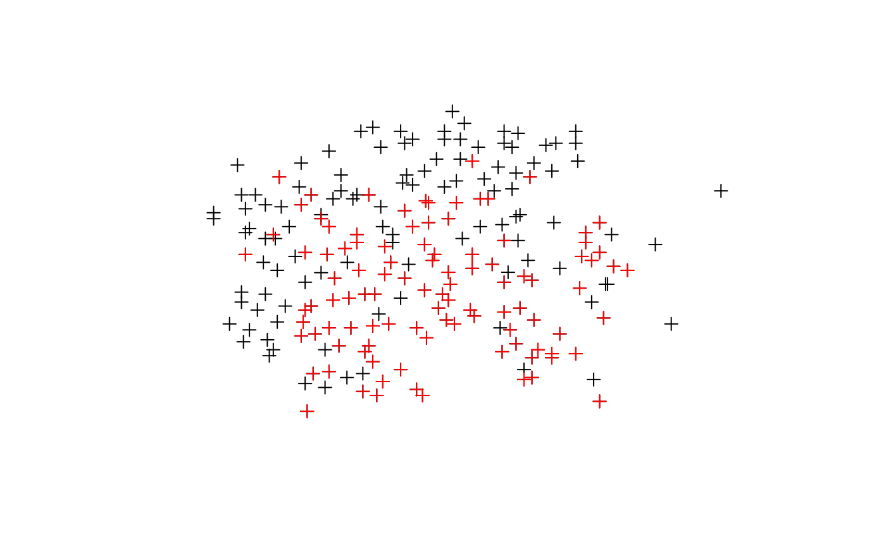

readShapePoints.RdThe use of this function is deprecated and it is not being maintained. Use rgdal::readOGR() or sf::st_read() instead - both of these read the coordinate reference system from the input file, while this deprecated function does not.For writing, use rgdal::writeOGR() or sf::st_write() instead.
The readShapePoints reads data from a points shapefile into a SpatialPointsDataFrame object. The writePointsShape function writes data from a SpatialPointsDataFrame object to a shapefile. Both reading and writing can be carried out for 2D and 3D point coordinates. Note DBF file restrictions in write.dbf.
readShapePoints(fn, proj4string = CRS(as.character(NA)), verbose = FALSE, repair=FALSE) writePointsShape(x, fn, factor2char = TRUE, max_nchar=254)
| fn | shapefile layer name, when writing omitting the extensions *.shp, *.shx and *.dbf, which are added in the function |
|---|---|
| proj4string | Object of class |
| verbose | default FALSE - report type of shapefile and number of shapes |
| repair | default FALSE: some shapefiles provided by Geolytics Inc. have values of object sizes stored in the *.shx index file that are eight bytes too large, leading the function to try to read past the end of file. If repair=TRUE, an attempt is made to repair the internal values, permitting such files to be read. |
| x | a |
| factor2char | logical, default TRUE, convert factor columns to character |
| max_nchar | default 254, may be set to a higher limit and passed through to the DBF writer, please see Details in |
a SpatialPointsDataFrame object
Roger Bivand
#> Warning: readShapePoints is deprecated; use rgdal::readOGR or sf::st_read#> Object of class SpatialPointsDataFrame #> Coordinates: #> min max #> coords.x1 860.0 987.5 #> coords.x2 505.5 581.0 #> Is projected: NA #> proj4string : [NA] #> Number of points: 211 #> Data attributes: #> STATION PRICE NROOM DWELL #> Min. : 1.0 Min. : 3.50 Min. : 3.000 Min. :0.0000 #> 1st Qu.: 53.5 1st Qu.: 30.95 1st Qu.: 5.000 1st Qu.:0.0000 #> Median :106.0 Median : 40.00 Median : 5.000 Median :1.0000 #> Mean :106.0 Mean : 44.31 Mean : 5.199 Mean :0.5355 #> 3rd Qu.:158.5 3rd Qu.: 53.75 3rd Qu.: 6.000 3rd Qu.:1.0000 #> Max. :211.0 Max. :165.00 Max. :10.000 Max. :1.0000 #> NBATH PATIO FIREPL AC #> Min. :1.000 Min. :0.0000 Min. :0.0000 Min. :0.0000 #> 1st Qu.:1.000 1st Qu.:0.0000 1st Qu.:0.0000 1st Qu.:0.0000 #> Median :1.500 Median :0.0000 Median :0.0000 Median :0.0000 #> Mean :1.573 Mean :0.1469 Mean :0.2417 Mean :0.2417 #> 3rd Qu.:2.000 3rd Qu.:0.0000 3rd Qu.:0.0000 3rd Qu.:0.0000 #> Max. :5.000 Max. :1.0000 Max. :1.0000 Max. :1.0000 #> BMENT NSTOR GAR AGE #> Min. :0.000 Min. :1.000 Min. :0.0000 Min. : 0.0 #> 1st Qu.:2.000 1st Qu.:2.000 1st Qu.:0.0000 1st Qu.: 20.0 #> Median :2.000 Median :2.000 Median :0.0000 Median : 25.0 #> Mean :1.981 Mean :1.905 Mean :0.2512 Mean : 30.1 #> 3rd Qu.:3.000 3rd Qu.:2.000 3rd Qu.:0.0000 3rd Qu.: 40.0 #> Max. :3.000 Max. :3.000 Max. :3.0000 Max. :148.0 #> CITCOU LOTSZ SQFT X #> Min. :0.0000 Min. : 5.70 Min. : 5.76 Min. :860.0 #> 1st Qu.:0.0000 1st Qu.: 20.76 1st Qu.:11.02 1st Qu.:889.0 #> Median :1.0000 Median : 56.25 Median :13.44 Median :910.0 #> Mean :0.6066 Mean : 72.28 Mean :16.43 Mean :911.6 #> 3rd Qu.:1.0000 3rd Qu.: 84.32 3rd Qu.:19.94 3rd Qu.:933.5 #> Max. :1.0000 Max. :400.37 Max. :47.61 Max. :987.5 #> Y #> Min. :505.5 #> 1st Qu.:528.8 #> Median :544.5 #> Mean :544.2 #> 3rd Qu.:559.0 #> Max. :581.0#> Warning: writePointsShape is deprecated; use rgdal::writeOGR or sf::st_write#> Shapefile type: Point, (1), # of Shapes: 103axx <- readShapePoints(tmpfl)#> Warning: readShapePoints is deprecated; use rgdal::readOGR or sf::st_readunlink(paste(tmpfl, ".*", sep="")) xx <- readShapePoints(system.file("shapes/pointZ.shp", package="maptools")[1])#> Warning: readShapePoints is deprecated; use rgdal::readOGR or sf::st_readdimensions(xx)#> [1] 3#> Object of class SpatialPointsDataFrame #> Coordinates: #> min max #> coords.x1 721627.3367 768477.042 #> coords.x2 5433514.5147 5507962.986 #> coords.x3 274.4738 1821.528 #> Is projected: NA #> proj4string : [NA] #> Number of points: 400 #> Data attributes: #> Id WTN coords_x1 coords_x2 #> Min. :0 Min. : 186 Min. :721627 Min. :5433515 #> 1st Qu.:0 1st Qu.:18974 1st Qu.:738257 1st Qu.:5448530 #> Median :0 Median :34510 Median :749857 Median :5455814 #> Mean :0 Mean :37679 Mean :746783 Mean :5461250 #> 3rd Qu.:0 3rd Qu.:57886 3rd Qu.:752059 3rd Qu.:5472530 #> Max. :0 Max. :83171 Max. :768477 Max. :5507963 #> coords_x3 #> Min. : 274.5 #> 1st Qu.: 307.0 #> Median : 397.1 #> Mean : 452.1 #> 3rd Qu.: 481.1 #> Max. :1821.5